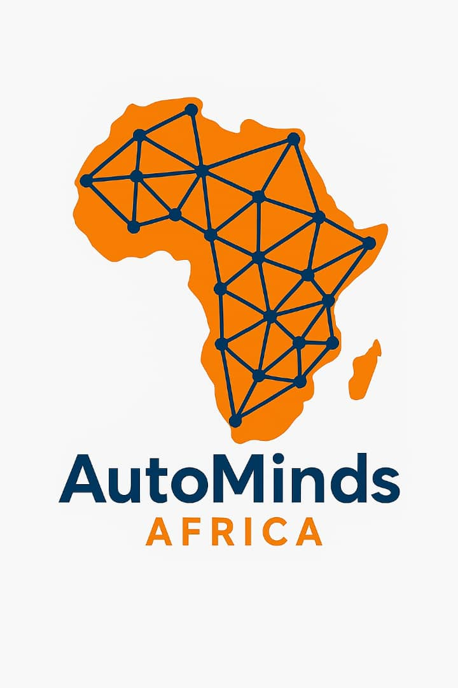

DIGITAL IDENTITY● LIVE OFFERING
Smart Digital Business Cards
Customized NFC + QR cards connected to editable profiles for individuals and multi-profile business dashboards for teams, with profile switching and flexible feature expansion.

A growing library of live systems, demos, prototypes and client-ready concepts. Real media is shown where available; animated system previews hold the place for projects whose screenshots and demos are still being prepared.
Project library
Every project record is ready to gain a live link, detailed case study, screenshots, results, technology notes and client context without redesigning the portfolio.
Customized NFC + QR cards connected to editable profiles for individuals and multi-profile business dashboards for teams, with profile switching and flexible feature expansion.
Business-trained assistants for FAQs, lead capture, booking, order intake, qualification, routing and explicit human escalation.
Internal operating system connecting leads, contacts, campaigns, projects, tasks, reporting, follow-ups and team accountability.
Custom role-based platforms for client management, pipelines, projects, tasks, invoices, reminders, reports and notifications.
Admissions, records, expenses, stock, reporting and document generation connected through structured digital workflows.
Customer profiles, points, rewards, activity history and owner dashboards designed to make repeat relationships visible.
The public company platform presenting our systems, work, team, contact paths and the evolving AutoMinds Africa digital experience.
Conversion-focused service websites with booking flows, forms, lead capture, dashboards and connected back-office actions.
Add to the library
As new project media becomes available, each animated preview can be replaced by the real demo, screenshot, video or dedicated case study without changing the overall design system.